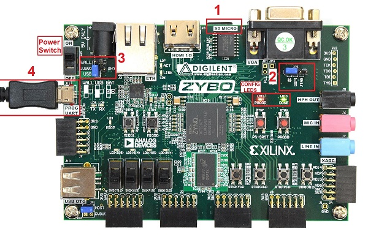

Start here¶
Table of Contents
Pynq for Zybo is a beta-stage deliverable from the Pynq team. The full build steps and Python packages will be available on the Pynq project GitHub after the official beta release. Zybo is currently the supported Pynq platform. The source code can be directly pulled onto Zybo and compiled locally.
Any issues can be submitted via the github site’s issue tracker once the site is live.
Note
- This beta deliverable of Pynq on Zybo runs natively on the Zynq ARM A9 CPUs. The CPUs run a web server which host the main Pynq portal. Any computing platform that is connected to the Internet and supports a mainstream web browser, (Chrome, Internet Explorer, Firefox, Safari etc.), can connect to the Pynq portal. This should work all types of laptops, desktops and even phones and tablets, independent of whether they run Windows, OSX or Linux.
- Pynq on Zybo does not try to teach Python programming to first-time users. Programmers who are familiar with other languages, will pick up much of the fundamentals of Python quickly from the examples in these notes. Nonetheless, Python is a very comprehensive language with many advanced features that may require additional study. For these reasons we have provided links to excellent Python training material
Setup¶
There are four main steps (each with several smaller steps) to getting started with Pynq and the ZYBO board. These are:
- 1 Get the image and prepare the micro-SD Card
- For now you will need to obtain the image, or a micro-SD card preloaded with the image directly from the Pynq team.
- The image can be copied to a Micro-SD card using Win32DiskImager
- 2. Configure ZYBO and connect it to your host machine and network
- Set the board jumpers correctly
- Insert the micro SD card
- Provide power to ZYBO by connecting the USB cable
- Connect the board via an Ethernet cable to the same network that your host is connected to
- Switch on ZYBO and verify that the status LEDs indicate successful boot-up
- 3. Open a web browser and connect to Pynq web portal
- Using a web browser, open the address http://pynq:9090
If you can’t connect to the board, see the [Frequently asked questions](10.-FAQs.html)
- 4. Familiarize yourself with Jupyter dashboard and notebooks
- From the Jupyter dashboard, explore the Getting Started Notebook(s) to learn more about Pynq and how to use the overlays provided to control the peripherals on the Zybo itself as well as other peripherals that can be attached to it.
Hardware installation¶
Prerequisites¶
- Laptop or desktop with Internet browser (Windows, OSX or Linux)
- Available USB port or power source
- Zybo board
Additional external peripherals (PMods and Grove Peripherals) are optional and will be discussed later.
Setup the ZYBO board¶
{kind=link}
If you received a Zybo kit from the Pynq team, all jumpers will be set correctly.
- Insert the Micro SD card into the ZYBO. (The Micro-SD slot is underneath the board)
- Change the JP5 jumper to SD (Set the board to boot from the Micro SD card)
- Set the JP7 jumper to USB (Power the board from the USB cable)
- Plug the USB cable to your PC/Laptop, and connect to PROG UART (J11) on the board
- Turn on the power switch on the board
When you power on the board, you should see a RED LED (PGOOD) and a GREEN LED (DONE) indicating the system has booted successfully.
Interacting with the Zynq Portal¶
Getting an IP address¶
DHCP is enabled by default, so when you first power on the board, it should obtain an IP address automatically if you connect it to a home router or network switch.
See the [Frequently asked questions](10.-FAQs.html) if you can’t connect to the board, or if you need to configure the network settings.
Open the Pynq Portal¶
Using a web browser, open the address pynq:9090
pynq is the default Ubuntu hostname of the board. (It is recommended to change Zybo hostnames if multiple boards are on the same network. e.g. classroom teaching.)
When prompted enter the password xpp to launch the Jupyter dashboard.
The Jupyter portal should now be open.
The Jupyter Dashboard¶

Troubleshooting¶
If you are having problems connecting to the board, see the [Frequently asked questions](10.-FAQs.html)